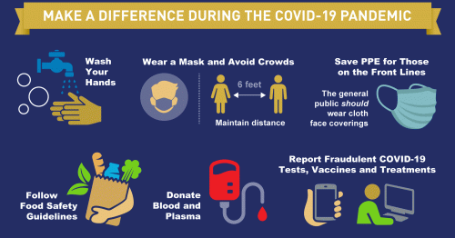
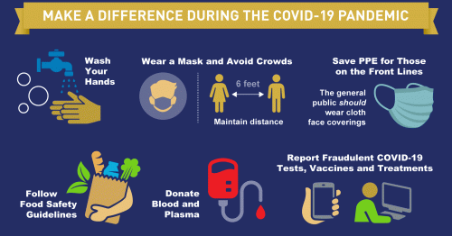
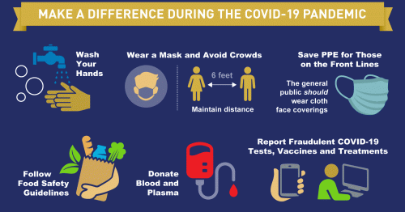

On January 21st, 2019 the first case of coronavirus (COVID-19) was confirmed in Washington State and on February 29th, 2019 the first COVID-19 related death was confirmed in the state. COVID-19 has spread rapidly throughout the population over the course of this past year. The data gathered and displayed in these maps shows the concentration of reported active cases and deaths in the State of Washington. The maps show that the rate of infection was and is greater than anticpated and the current number of hospitals was and is unprepared to handle the pandemic. They also show that the larger the numbers of reported cases and deaths correlates to counties with a larger number of schools. If everyone can follow the protocols set forth by the governing body hopefully we can get through the pandemic with minimal loss of life.
The map above displays the reported active cases of COVID-19 by county in Washington State as well as locations of hospitals and schools. The data for the COVID-19 cases and deaths, hospital locations, and school locations were obtained from the Washington Geospatial Open Data Portal. The icons used for the hospital and school locations were obtained from Flaticon. By clicking on the county a popup will appear with the name of the county, its phase, and the number of active COVID-19 cases as of December 6th, 2020.

The map above displays the reported deaths of COVID-19 by county in Washington State as well as locations of hospitals. The data for the COVID-19 cases and deaths, hospital locations, and school locations were obtained from the Washington Geospatial Open Data Portal. The icons used for the hospital and school locations were obtained from Flaticon. By clicking on the county a popup will appear with the name of the county, its phase, and the number of deaths caused by COVID-19 as of December 6th, 2020.